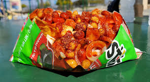
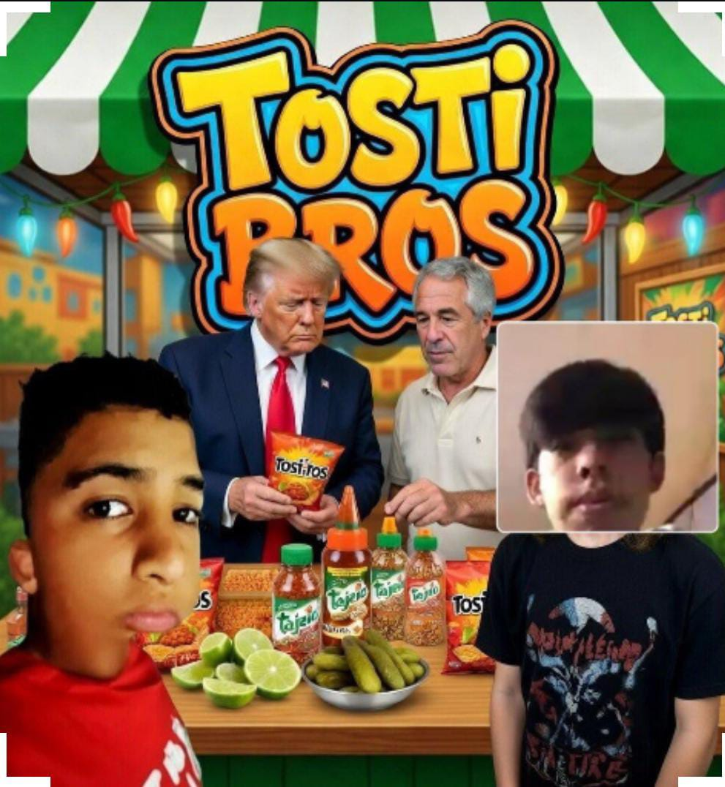

Tostilocos Clásicos

Incluyen cueritos, cacahuates, chamoy y salsa.
Tostilocos Especiales

Con salsa extra y mucho chamoy.
¡El mejor sabor callejero en cada bocado!

Los tostilocos son una botana mexicana hecha con Tostitos, cueritos, cacahuates, chamoy, limón y salsa picante.

Incluyen cueritos, cacahuates, chamoy y salsa.
Con salsa extra y mucho chamoy.
Ubicación: Tijuana, Baja California, CECYTE VILLA DEL SOL
Teléfono: 123-456-7890
Email: Tostibross@gmail.com